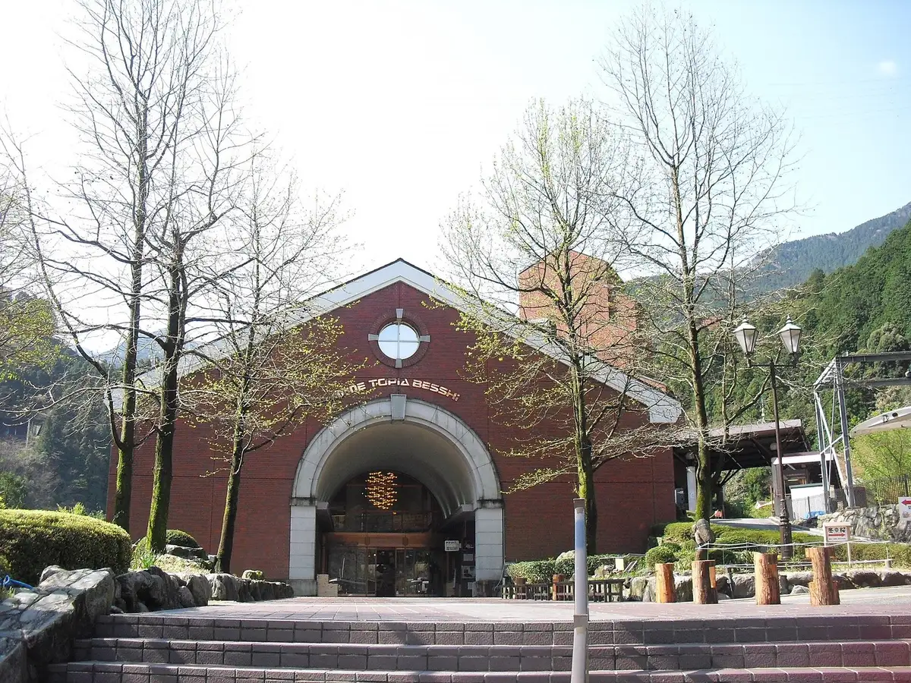
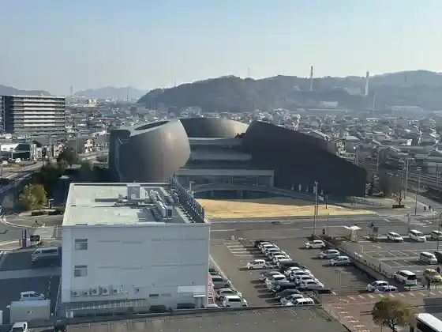
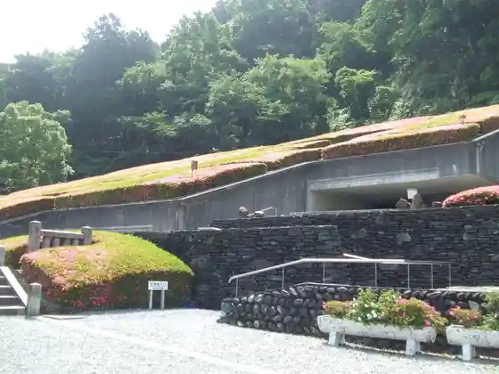
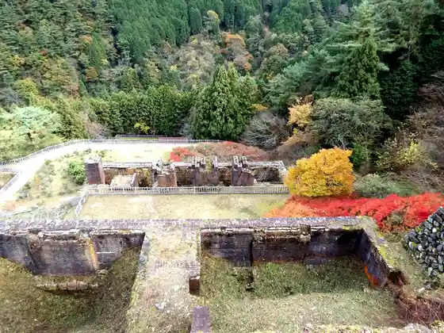
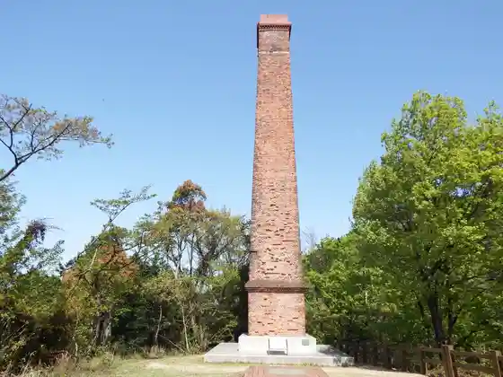

Niihama
Niihama · Ehime
Niihama
Highlighted on the Ehime map.

Stay
Riigaroiyaru Hotel Niihama
Hotel Arufawan Niihama
Hotel Rutoin Niihama
Tennen Onsen Iyo Baths Supa Hotel Niihama
Bijinesu Hotel Yanagi Ya
Oberuju Yuragi
Hotel Makkusubijon
Hotel Niihama Hiruzupurinsu Kan (BBH Hotel Gurupu)
Toyoko INN Niihama Ekimae
Hotel No.1 Niihama
Za Gurobarutawa
Dining
Yatsurugi Den Sakai Suji Mise
Yakiniku Kissui Niihama Main Shop
Katsu Domburi Tonkatsu Katsu Fuku Niihama Mise
Restaurant Loca
Uotami Niihama Nobori Michi Sanrodo Mise
Piero no Su
Reigurattsue Fuji
Seiniku Tonya Chokuei Yakiniku Mise Yakiniku no Kura Niihama Tsuzura Fuchi Mise
Hiuchi
Sumibi Yakiniku Man Maru Kawato Mise
Gyukei Yakiniku
Igokoro Den Niihama Mise
Karatomari
Niwatori Yakiniku Sui Rei
Matoi
Horumon Alley Niku Ichi
Onsen
Bijinesu Hotel MISORA (Misora) Public Bath
Hotel Arufawan Niihama Kusunoki Baths
Hotel Rutoin Niihama Public Bath
Tennen Onsen Iyo Baths Supa Hotel Niihama Tennen Onsen
Hotel Niihama Hiruzu (BBH Hotel Gurupu) Public Bath
Oberuju Yuragi Onsen
Hotel Niihama Hiruzupurinsu Kan (BBH Hotel Gurupu) Kashikiri Furo
Hotel No.1 Niihama Public Bath
Sights
Roadside Station Maintopia Besshi
Akagane Museum

Besshi Dozan Memorial Museum

Tohei

Kyu Yamane Seiren Tokoro Entotsu
